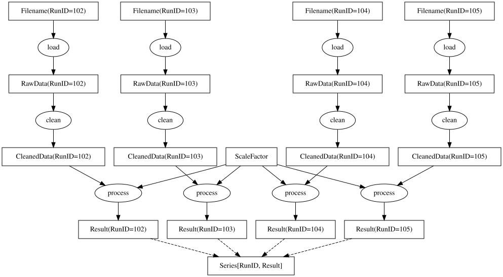
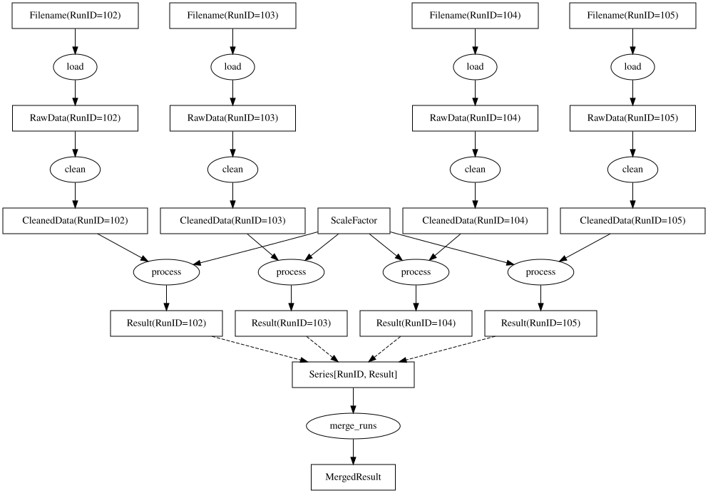
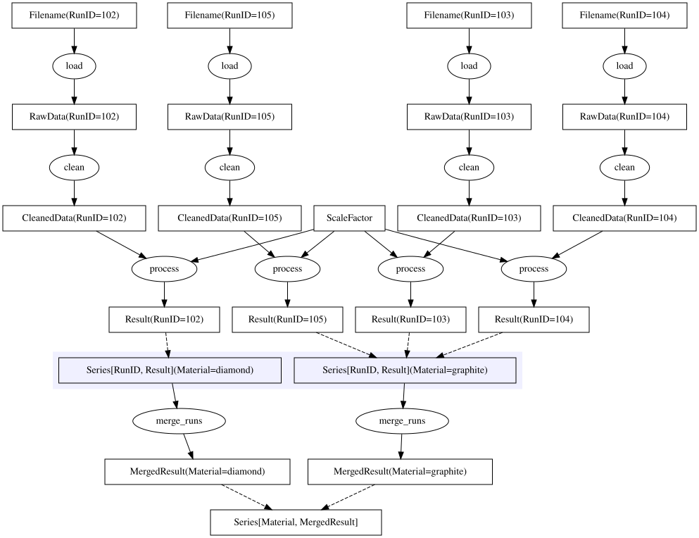
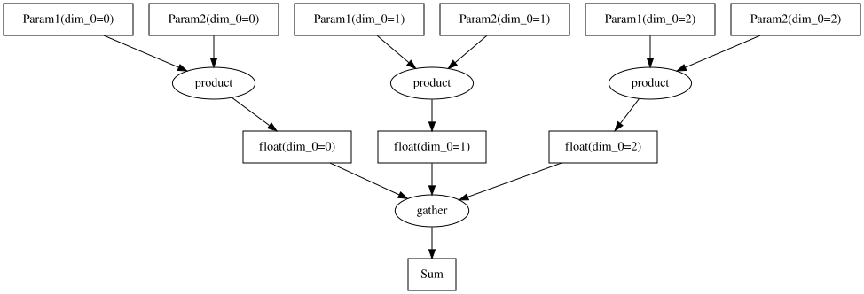
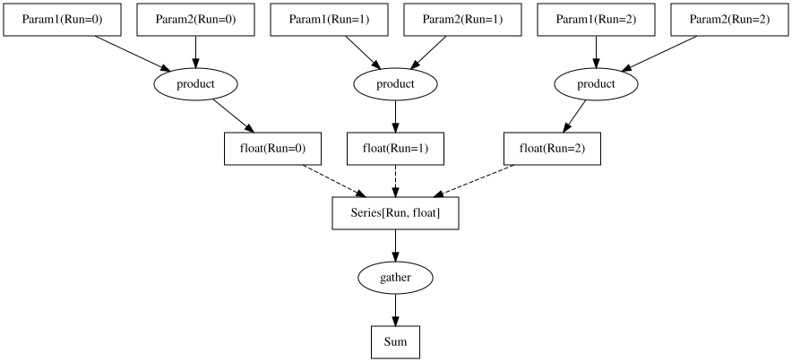
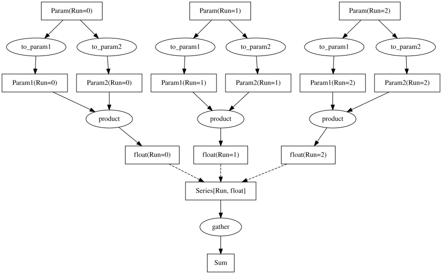
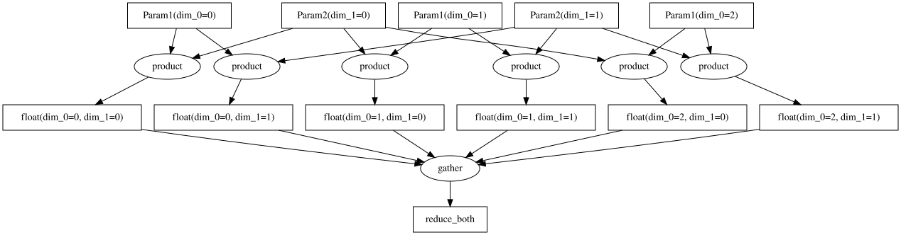

Parameter Tables#
Overview#
Parameter tables provide a mechanism for repeating parts of or all of a computation with different values for one or more parameters. This allows for a variety of use cases, similar to map, reduce, and groupby operations in other systems. We illustrate each of these in the follow three chapters.
Computing results for series of parameters#
This chapter illustrates how to implement map operations with Sciline.
Starting with the model workflow introduced in Getting Started, we can replace the fixed Filename parameter with a series of filenames listed in a ParamTable:
[1]:
from typing import NewType
import sciline
_fake_filesytem = {
'file102.txt': [1, 2, float('nan'), 3],
'file103.txt': [1, 2, 3, 4],
'file104.txt': [1, 2, 3, 4, 5],
'file105.txt': [1, 2, 3],
}
# 1. Define domain types
Filename = NewType('Filename', str)
RawData = NewType('RawData', dict)
CleanedData = NewType('CleanedData', list)
ScaleFactor = NewType('ScaleFactor', float)
Result = NewType('Result', float)
# 2. Define providers
def load(filename: Filename) -> RawData:
"""Load the data from the filename."""
data = _fake_filesytem[filename]
return RawData({'data': data, 'meta': {'filename': filename}})
def clean(raw_data: RawData) -> CleanedData:
"""Clean the data, removing NaNs."""
import math
return CleanedData([x for x in raw_data['data'] if not math.isnan(x)])
def process(data: CleanedData, param: ScaleFactor) -> Result:
"""Process the data, multiplying the sum by the scale factor."""
return Result(sum(data) * param)
# 3. Create pipeline
# 3.a Providers and normal parameters
providers = [load, clean, process]
params = {ScaleFactor: 2.0}
# 3.b Parameter table
RunID = NewType('RunID', int)
run_ids = [102, 103, 104, 105]
filenames = [f'file{i}.txt' for i in run_ids]
param_table = sciline.ParamTable(RunID, {Filename: filenames}, index=run_ids)
Note how steps 1.) and 2.) are identical to those from the example without parameter table. Above we have created the following parameter table:
[2]:
param_table
[2]:
| RunID | Filename |
|---|---|
| 102 | file102.txt |
| 103 | file103.txt |
| 104 | file104.txt |
| 105 | file105.txt |
We can now create the pipeline and set the parameter table:
[3]:
# 3.c Setup pipeline
pipeline = sciline.Pipeline(providers, params=params)
pipeline.set_param_table(param_table)
Then we can compute Result for each index in the parameter table:
[4]:
pipeline.compute(sciline.Series[RunID, Result])
[4]:
| RunID | Value |
|---|---|
| 102 | 12.0 |
| 103 | 20.0 |
| 104 | 30.0 |
| 105 | 12.0 |
sciline.Series is a special dict-like type that signals to Sciline that the values of the series are based on values from one or more columns of a parameter table. The parameter table is identified using the first argument to Series, in this case RunID. The second argument specifies the result to be computed.
We can also visualize the task graph for computing the series of Result values:
[5]:
pipeline.visualize(sciline.Series[RunID, Result])
[5]:

Nodes that depend on values from a parameter table are drawn with the parameter index name (the row dimension of the parameter table) and value given in parenthesis. The dashed arrow indicates and internal transformation that gathers result from each branch and combines them into a single output, here Series[RunID, Result].
Note
With long parameter tables, graphs can get messy and hard to read. Try using visualize(..., compact=True).
The compact=True option to yields a much more compact representation. Instead of drawing every intermediate result and provider for each parameter, we then represent each parameter-dependent result as a single “3D box” node, representing all nodes for different values of the respective parameter.
Combining intermediate results from series of parameters#
This chapter illustrates how to implement reduce operations with Sciline.
Instead of requesting a series of results as above, we can also build pipelines with providers that depend on such series. We can create a new pipeline, or extend the existing one by inserting a new provider:
[6]:
MergedResult = NewType('MergedResult', float)
def merge_runs(runs: sciline.Series[RunID, Result]) -> MergedResult:
return MergedResult(sum(runs.values()))
pipeline.insert(merge_runs)
graph = pipeline.get(MergedResult)
graph.visualize()
[6]:

Note that this is identical to the example in the previous section, except for the last two nodes in the graph. The computation now returns a single result:
[7]:
graph.compute()
[7]:
74.0
This is useful if we need to continue computation after gathering results without setting up a second pipeline.
Grouping intermediate results based on secondary parameters#
This chapter illustrates how to implement groupby operations with Sciline.
Continuing from the examples for map and reduce, we can introduce a secondary parameter in the table, such as the material of the sample:
[8]:
Material = NewType('Material', str)
# 3.a Providers and normal parameters
providers = [load, clean, process, merge_runs]
params = {ScaleFactor: 2.0}
# 3.b Parameter table
run_ids = [102, 103, 104, 105]
sample = ['diamond', 'graphite', 'graphite', 'graphite']
filenames = [f'file{i}.txt' for i in run_ids]
param_table = sciline.ParamTable(
RunID, {Filename: filenames, Material: sample}, index=run_ids
)
param_table
[8]:
| RunID | Filename | Material |
|---|---|---|
| 102 | file102.txt | diamond |
| 103 | file103.txt | graphite |
| 104 | file104.txt | graphite |
| 105 | file105.txt | graphite |
[9]:
# 3.c Setup pipeline
pipeline = sciline.Pipeline(providers, params=params)
pipeline.set_param_table(param_table)
We can now compute MergedResult for a series of “materials”:
[10]:
pipeline.compute(sciline.Series[Material, MergedResult])
[10]:
| Material | Value |
|---|---|
| diamond | 12.0 |
| graphite | 62.0 |
The computation looks as show below. Note how the initial steps of the computation depend on the RunID parameter, while later steps depend on Material: The files for each run ID have been grouped by their material and then merged:
[11]:
pipeline.visualize(sciline.Series[Material, MergedResult])
[11]:

More examples#
Using tables for series of parameters#
Sometimes the parameter of interest is the index of a parameter table itself. If there are no further parameters, the param table may have no columns (aside from the index). In this case we can bypass the manual creation of a parameter table and use the Pipeline.set_param_series function instead:
[12]:
from typing import NewType
import sciline as sl
Param = NewType("Param", int)
Sum = NewType("Sum", float)
def compute(x: Param) -> float:
return 0.5 * x
def gather(x: sl.Series[Param, float]) -> Sum:
return Sum(sum(x.values()))
pl = sl.Pipeline([gather, compute])
pl.set_param_series(Param, [1, 4, 9])
pl.visualize(Sum)
[12]:

Note that pl.set_param_series(Param, [1, 4, 9]) above is equivalent to pl.set_param_table(sl.ParamTable(Param, columns={}, index=[1, 4, 9])).
[13]:
pl.compute(Sum)
[13]:
7.0
Combining multiple parameters from same table#
[14]:
import sciline as sl
Sum = NewType("Sum", float)
Param1 = NewType("Param1", int)
Param2 = NewType("Param2", int)
Row = NewType("Run", int)
def gather(
x: sl.Series[Row, float],
) -> Sum:
return Sum(sum(x.values()))
def product(x: Param1, y: Param2) -> float:
return x / y
pl = sl.Pipeline([gather, product])
pl.set_param_table(sl.ParamTable(Row, {Param1: [1, 4, 9], Param2: [1, 2, 3]}))
pl.visualize(Sum)
[14]:

[15]:
pl.compute(Sum)
[15]:
6.0
Diamond graphs#
[16]:
Sum = NewType("Sum", float)
Param = NewType("Param", int)
Param1 = NewType("Param1", int)
Param2 = NewType("Param2", int)
Row = NewType("Run", int)
def gather(x: sl.Series[Row, float]) -> Sum:
return Sum(sum(x.values()))
def to_param1(x: Param) -> Param1:
return Param1(x)
def to_param2(x: Param) -> Param2:
return Param2(x)
def product(x: Param1, y: Param2) -> float:
return x * y
pl = sl.Pipeline([gather, product, to_param1, to_param2])
pl.set_param_table(sl.ParamTable(Row, {Param: [1, 2, 3]}))
pl.visualize(Sum)
[16]:

Combining parameters from different tables#
[17]:
import sciline as sl
List1 = NewType("List1", float)
List2 = NewType("List2", float)
Param1 = NewType("Param1", int)
Param2 = NewType("Param2", int)
Row1 = NewType("Row1", int)
Row2 = NewType("Row2", int)
def gather1(x: sl.Series[Row1, float]) -> List1:
return List1(list(x.values()))
def gather2(x: sl.Series[Row2, List1]) -> List2:
return List2(list(x.values()))
def product(x: Param1, y: Param2) -> float:
return x * y
pl = sl.Pipeline([gather1, gather2, product])
pl.set_param_table(sl.ParamTable(Row1, {Param1: [1, 4, 9]}))
pl.set_param_table(sl.ParamTable(Row2, {Param2: [1, 2]}))
pl.visualize(List2)
[17]:

Note how intermediates such as float(Row1, Row2) depend on two parameters, i.e., we are dealing with a 2-D array of branches in the graph.
[18]:
pl.compute(List2)
[18]:
[[1, 4, 9], [2, 8, 18]]